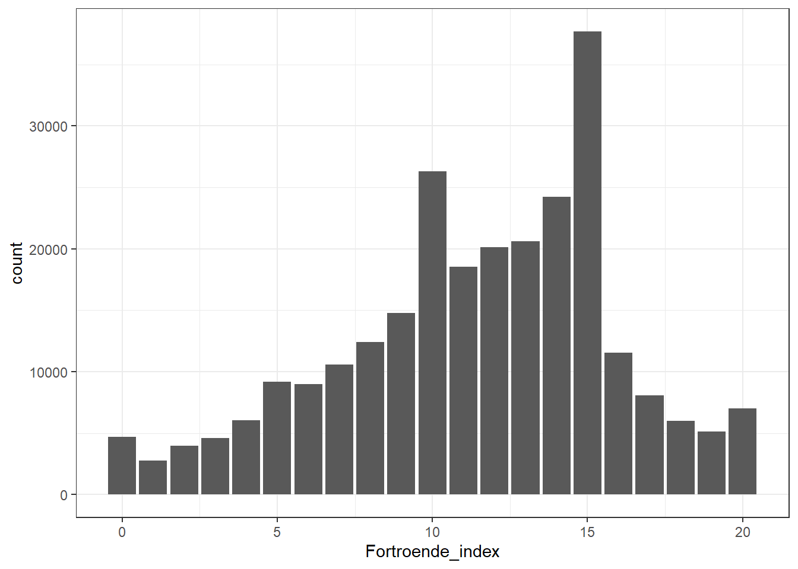
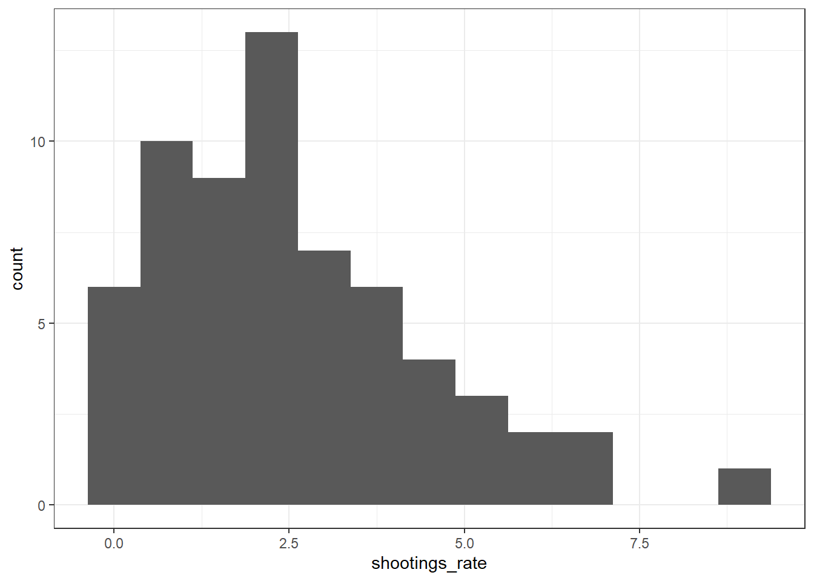

Kapitel 3 Univariat analysis
Detta kapitel handlar om univariat analys som vi diskuterade i klassrummet.
Här ska vi prata om olika skal nivåer och hur de olika typer ser ut i data formen. Sen börja med data data behandling och grunläggande visualisering.
3.1 Ladda in data till R
Först vi behöver ladda in data kopiera och och klistra in data. Kan du ser datafilen i R studio? Om inte se till att du had lagt filen i samma plats som ditt R projekt. När du har gjort den och kan se filen i R studio då du kan trycka den gröna plus tecken högst upp i vänsterhörnet. Kopiera och klistra in den följande kod till dina skript och kör koden.
## Warning: Missing `trust` will be set to FALSE by default for RData in 2.0.0.Nu du borde se en ny objekt i enrironment fönstret som heter ‘df’ som inkludera 375790 observationer och 6 variabler. Om du vill titta på datan du kan trycka på den och en ny fönster ska öppna med datavy.
3.2 Data överblick.
Här kommer två sätt att får samma information
## alder_4 Brottsoffer_hot Fortroende_index Radsla_oro
## 1 65-84 Nej 8 Orolig
## 2 65-84 Nej 20 Orolig
## 3 65-84 <NA> 7 Inte orolig
## 4 65-84 Nej NA Inte orolig
## 5 65-84 Nej 19 Orolig
## 6 65-84 Nej 15 Orolig
## Radsla_beteende Storstad
## 1 Sällan eller aldrig avstått aktivitet Inte storstad
## 2 Sällan eller aldrig avstått aktivitet Storstad
## 3 Sällan eller aldrig avstått aktivitet Inte storstad
## 4 Sällan eller aldrig avstått aktivitet Inte storstad
## 5 Ofta avstått aktivitet Inte storstad
## 6 Ofta avstått aktivitet Inte storstad| alder_4 | Brottsoffer_hot | Fortroende_index | Radsla_oro | Radsla_beteende | Storstad |
|---|---|---|---|---|---|
| 65-84 | Nej | 8 | Orolig | Sällan eller aldrig avstått aktivitet | Inte storstad |
| 65-84 | Nej | 20 | Orolig | Sällan eller aldrig avstått aktivitet | Storstad |
| 65-84 | NA | 7 | Inte orolig | Sällan eller aldrig avstått aktivitet | Inte storstad |
| 65-84 | Nej | NA | Inte orolig | Sällan eller aldrig avstått aktivitet | Inte storstad |
| 65-84 | Nej | 19 | Orolig | Ofta avstått aktivitet | Inte storstad |
| 65-84 | Nej | 15 | Orolig | Ofta avstått aktivitet | Inte storstad |
| 65-84 | Nej | NA | Orolig | Sällan eller aldrig avstått aktivitet | Storstad |
| 65-84 | Nej | 6 | Inte orolig | Sällan eller aldrig avstått aktivitet | Inte storstad |
| 65-84 | Nej | 14 | Orolig | Sällan eller aldrig avstått aktivitet | Inte storstad |
| 65-84 | Nej | 19 | Orolig | Sällan eller aldrig avstått aktivitet | Storstad |
3.3 Descriptive statistics
Vi måste alltid kommer ihåg skal nivå av variablerna när vi kör alla slags analysen. Även i univariatanalys t.ex. vad btyder det att räkna ut medelvärdet av en dikatom variabel som ‘storstad’?
| vars | n | mean | sd | median | trimmed | mad | min | max | range | skew | kurtosis | se | |
|---|---|---|---|---|---|---|---|---|---|---|---|---|---|
| alder_4* | 1 | 375590 | 2.841875 | 1.0327887 | 3 | 2.927344 | 1.4826 | 1 | 4 | 3 | -0.4060423 | -1.0256244 | 0.0016852 |
| Brottsoffer_hot* | 2 | 371042 | 1.925895 | 0.2619417 | 2 | 2.000000 | 0.0000 | 1 | 2 | 1 | -3.2518225 | 8.5743727 | 0.0004300 |
| Fortroende_index | 3 | 269696 | 11.408805 | 4.5050388 | 12 | 11.625914 | 4.4478 | 0 | 20 | 20 | -0.4529712 | -0.2107235 | 0.0086748 |
| Radsla_oro* | 4 | 366123 | 1.451627 | 0.4976552 | 1 | 1.439534 | 0.0000 | 1 | 2 | 1 | 0.1944035 | -1.9622126 | 0.0008225 |
| Radsla_beteende* | 5 | 373014 | 1.117682 | 0.3222315 | 1 | 1.022104 | 0.0000 | 1 | 2 | 1 | 2.3729340 | 3.6308253 | 0.0005276 |
| Storstad* | 6 | 375590 | 1.289012 | 0.4533041 | 1 | 1.236265 | 0.0000 | 1 | 2 | 1 | 0.9308872 | -1.1334520 | 0.0007397 |
3.4 Visualisering
## ── Attaching core tidyverse packages ──────────────────────── tidyverse 2.0.0 ──
## ✔ dplyr 1.1.4 ✔ readr 2.1.5
## ✔ forcats 1.0.0 ✔ stringr 1.5.1
## ✔ ggplot2 3.5.1 ✔ tibble 3.2.1
## ✔ lubridate 1.9.3 ✔ tidyr 1.3.1
## ✔ purrr 1.0.2
## ── Conflicts ────────────────────────────────────────── tidyverse_conflicts() ──
## ✖ ggplot2::%+%() masks psych::%+%()
## ✖ ggplot2::alpha() masks psych::alpha()
## ✖ dplyr::filter() masks stats::filter()
## ✖ dplyr::lag() masks stats::lag()
## ℹ Use the conflicted package (<http://conflicted.r-lib.org/>) to force all conflicts to become errorsdf %>% drop_na() %>% #Det har ta bort alla NA annars det får sin egen kolumn
ggplot()+ geom_bar(aes(x=Brottsoffer_hot))+theme_bw()#Här är en plot av variabeln 'Radsla_oro'.
df %>% drop_na() %>% #Det har ta bort alla NA annars det får sin egen kolumn
ggplot()+ geom_bar(aes(x=Radsla_oro))+theme_bw()#Här är en plot av variabeln 'Radsla_beteende'.
df %>% drop_na() %>% #Det har ta bort alla NA annars det får sin egen kolumn
ggplot()+ geom_bar(aes(x=Radsla_beteende))+theme_bw()De tre variablerna var alla dikotomiserad i.e. de variera bara mellan två kategorier. Men vi kan också skapa en ‘index’ av många variabler
I denna fall vi har skapat ett additivt index (en sammanslagning av fem frågor) som mäter om respondenten har stort eller litet förtroende för rättsväsendet. Kontinuerlig: 0 (lågt förtroende) till 20 (högt förtroende) (Ingenåsikt/vetinte=bortfall)
Vi kan se de beskrivande statistiker för bara denna variabel om vi lägga till variabelns namn efter datasetets namn och en ‘$’ tecken
| vars | n | mean | sd | median | min | max | range | se | |
|---|---|---|---|---|---|---|---|---|---|
| X1 | 1 | 269696 | 11.4088 | 4.505039 | 12 | 0 | 20 | 20 | 0.0086748 |
#Här är en plot av variabeln 'Fortroende_index'.
df %>% drop_na() %>% #Det har ta bort alla NA annars det får sin egen kolumn
ggplot()+ geom_bar(aes(x=Fortroende_index))+theme_bw()
Sen vi kan även ladda upp en till data set om vi vill. Lada ner den ‘shootings’ excel fil från canvas och spara den i samma map som du har R projektet. När du har gjort den det borde dycker upp i fönstret igen. Sen kör denna kod att ladda in data till R och nämna den ‘shootings’
## year region shootings_rate trust_police_average education_average
## 1 2018 västragötaland 2.982781 2.277397 2.252655
## 2 2018 blekinge 1.252474 2.430769 2.112299
## 3 2018 jönköping 2.494284 2.264463 2.113990
## 4 2018 västernorrland 0.407410 2.447059 2.180451
## 5 2018 västmanland 1.825290 2.169014 2.216000
## 6 2018 södermanland 4.411341 2.272727 2.148036
## income_average
## 1 3.501167
## 2 3.200000
## 3 3.400552
## 4 3.315175
## 5 3.502146
## 6 3.370253| vars | n | mean | sd | median | min | max | range | se | |
|---|---|---|---|---|---|---|---|---|---|
| X1 | 1 | 63 | 2.557833 | 1.898535 | 2.125386 | 0 | 8.860789 | 8.860789 | 0.2391929 |

Vi kan också skapa en boxplot av variabeln